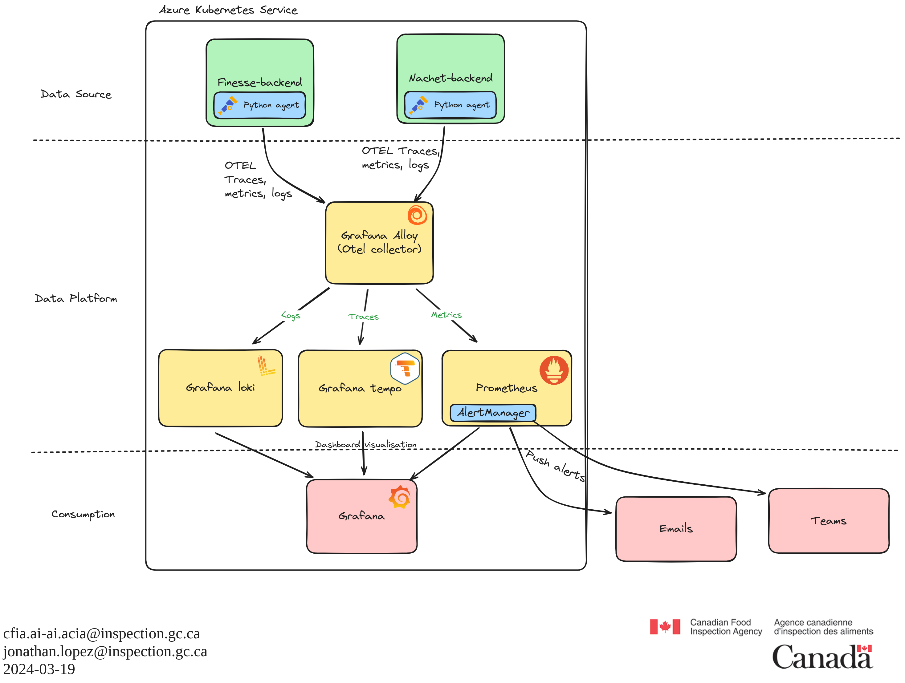

ADR-018 : Observability Management
Executive Summary
We have decided to implement a comprehensive observability stack for our applications hosted on Azure Kubernetes Service (AKS) using OpenTelemetry, Grafana Alloy, and various Grafana components (Loki, Tempo, Prometheus). This decision aims to enhance our visibility into system performance, improve monitoring of critical services, and provide a vendor-neutral, open-source solution that aligns with our agency’s requirements.

Background
At the Canadian Food Inspection Agency, we faced significant challenges in monitoring and understanding the performance of our applications and system services on Azure Kubernetes Service (AKS). Despite achieving high availability and automation with AKS, we lacked contextualized data to diagnose issues and monitor the health of our nodes and services like ArgoCD and NGINX Ingress, as well as our client applications.
We sought a solution that would provide centralized and open-source monitoring, offering insights into activity, traffic, and engagement with our applications. Our goal was to implement a generic, vendor-neutral solution for collecting and displaying telemetry data (logs, traces, and metrics) across our applications. After evaluating various options, we chose OpenTelemetry for data collection, Grafana Alloy as the collector, and Grafana’s suite of tools (Loki, Tempo, Prometheus) for log, trace, and metric management.
Décision
Data Source: OpenTelemetry
We chose OpenTelemetry as our primary data source for telemetry collection due to its vendor-neutral nature and consistent APIs/SDKs across multiple programming languages. This choice aligns well with our agency’s diverse technological landscape and ensures broad compatibility and scalability.
Data Source: Considered alternatives
- Jaeger:
- Advantages: Excellent tracing capabilities, integration with various backend storage systems.
-
Disadvantages: Primarily focused on tracing, less support for metrics and logs compared to OpenTelemetry.
-
Zipkin:
- Advantages: Simple and easy to deploy, good tracing support.
- Disadvantages: Limited support for metrics and logs, less flexibility than OpenTelemetry.
Data Platform: Grafana Alloy, Loki, Tempo, Prometheus
We decided to use Grafana Alloy as our OpenTelemetry collector, leveraging its vendor-neutral stance and seamless integration with other Grafana components. The primary allure of Grafana Alloy lies in its promise to provide a unified observability platform, akin to having a master key for various locks. This allows seamless integration with tools like Prometheus for metrics, Loki for logs, and many others. Alloy simplifies the observability stack, making it more accessible and manageable.
For data sources, we selected Grafana Loki for logs, Grafana Tempo for traces, and Prometheus for metrics.
-
Alloy:
- Advantages: Unified observability platform, vendor-neutral, seamless integration with other Grafana components.
- Disadvantages: Complexity in setting up and managing large-scale log storage solutions.
-
Loki:
- Advantages: Highly efficient log aggregation, scalable storage, and integration with Grafana for seamless visualization.
- Disadvantages: Complexity in setting up and managing large-scale log storage solutions.
-
Tempo:
- Advantages: Efficient, scalable distributed tracing, integrates well with Grafana dashboards.
- Disadvantages: Can be resource-intensive, requires proper configuration for optimal performance.
-
Prometheus:
- Advantages: Robust metric collection and querying capabilities, strong ecosystem support, and alert management.
- Disadvantages: Can be resource-intensive, particularly at scale, and requires significant setup and maintenance.
Data Platform: considered alternatives
-
Native OpenTelemetry collector:
- Advantages:
- Direct integration: Direct support for OpenTelemetry protocols ensures seamless data collection and export.
- Highly customizable: Provides extensive customization options to tailor the observability pipeline to specific needs.
- Disadvantages:
- Complex configuration: Requires significant configuration and setup effort, which can be time-consuming.
- Lack of integrated dashboards: Does not offer built-in visualization tools, requiring additional integrations for dashboards.
- Advantages:
-
Azure Monitor:
- Advantages:
- Native Azure integration: Seamless integration with Azure services and resources, simplifying setup and management.
- Comprehensive monitoring: Offers a wide range of monitoring and observability features, including logs, metrics, and traces.
- Disadvantages:
- Vendor lock-in: Tied to the Azure ecosystem, limiting flexibility and portability.
- Costly at scale: Costs can escalate quickly, especially with large volumes of data.
- Configuration limitations: Limited ability to configure as code, potentially hindering automation and version control efforts.
- Limited community support: Relatively limited community compared to open-source solutions, potentially limiting resources and support.
- Advantages:
-
ClickHouse
- Advantages:
- High performance: Exceptional performance in handling large volumes of data, suitable for intensive analytics.
- Scalable: Scales efficiently to handle growing data needs without significant performance degradation.
- Disadvantages:
- Complex setup: Requires a complex setup and configuration process, making it challenging for smaller teams.
- Additional tooling needed: Needs additional tools for visualization and integration, increasing the overall complexity of the stack.
- Advantages:
-
Elasticsearch
- Advantages:
- Powerful search capabilities: Offers robust search and analytics capabilities, making it ideal for log management.
- Wide adoption: Widely adopted with a large community, providing extensive resources and support.
- Disadvantages:
- Resource-intensive: Can be resource-intensive, requiring substantial infrastructure to run efficiently.
- Costly at scale: Costs can escalate quickly, especially when dealing with large volumes of data.
- Advantages:
Consumption: Grafana
For data visualization and dashboarding, we chose Grafana due to its robust support for diverse data sources, extensive community, and powerful dashboard capabilities. Grafana allows us to create custom dashboards to monitor various aspects of our system, including application activity, traffic, and performance metrics.
Consumption: Considered alternatives
- Kibana:
- Advantages: Excellent for visualizing data stored in Elasticsearch, powerful search and analytics capabilities.
-
Disadvantages: Primarily tied to the Elasticsearch ecosystem, less flexibility with other data sources.
-
Azure Log Analytics:
- Advantages: Native integration with Azure services, comprehensive monitoring capabilities.
-
Disadvantages: Vendor lock-in, limited support for non-Azure data sources.
-
DataDog:
- Advantages: Comprehensive monitoring and observability platform, strong integrations.
-
Disadvantages: Proprietary, can be expensive, less flexibility for open-source integrations.
-
Prometheus UI:
- Advantages: Native support for Prometheus metrics, simple to use.
- Disadvantages: Limited visualization capabilities compared to Grafana, primarily focused on metrics.
Conclusion
Implementing OpenTelemetry for data collection, Grafana Alloy for data processing, and Grafana for visualization provides a fully open-source, vendor-neutral observability stack. This approach enhances our ability to monitor and troubleshoot our applications and services effectively. The chosen solutions offer scalability, flexibility, and robust community support, ensuring we can meet our current and future observability needs. Furthermore, OpenTelemetry is a widely adopted standard in the market, empowering our developers to work with industry norms. Since we are in the early development stages of our prototypes, this is a perfect opportunity to provide instrumentation by design and ensure visibility over performance from the outset. This proactive approach will help us optimize our applications' performance and reliability in the early stages of development.